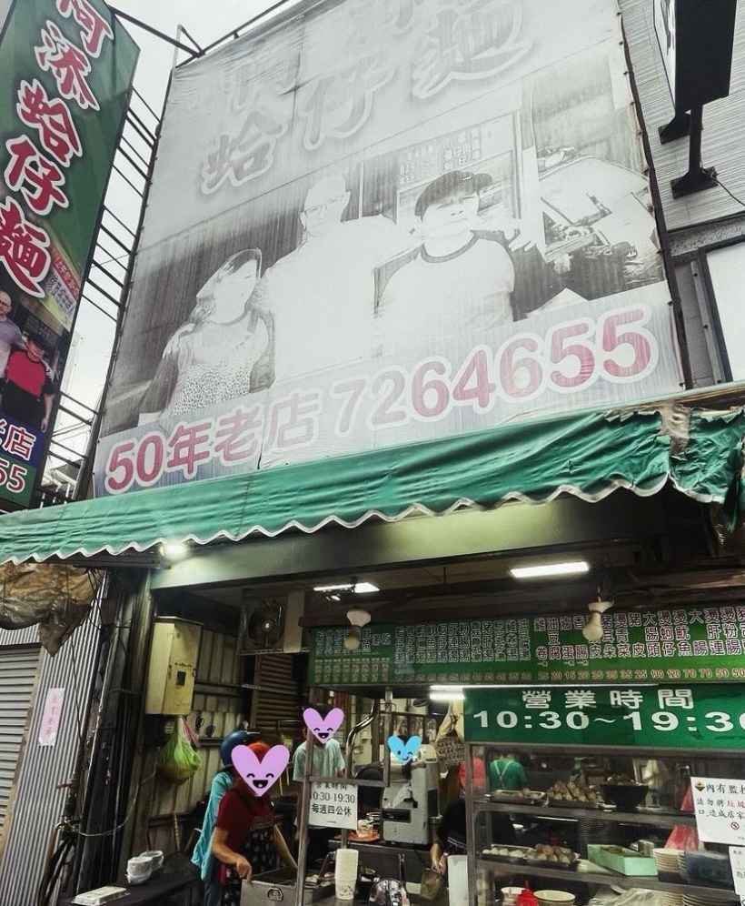
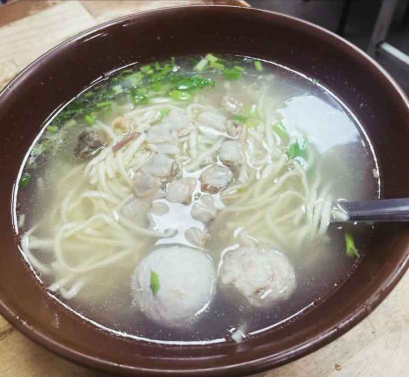
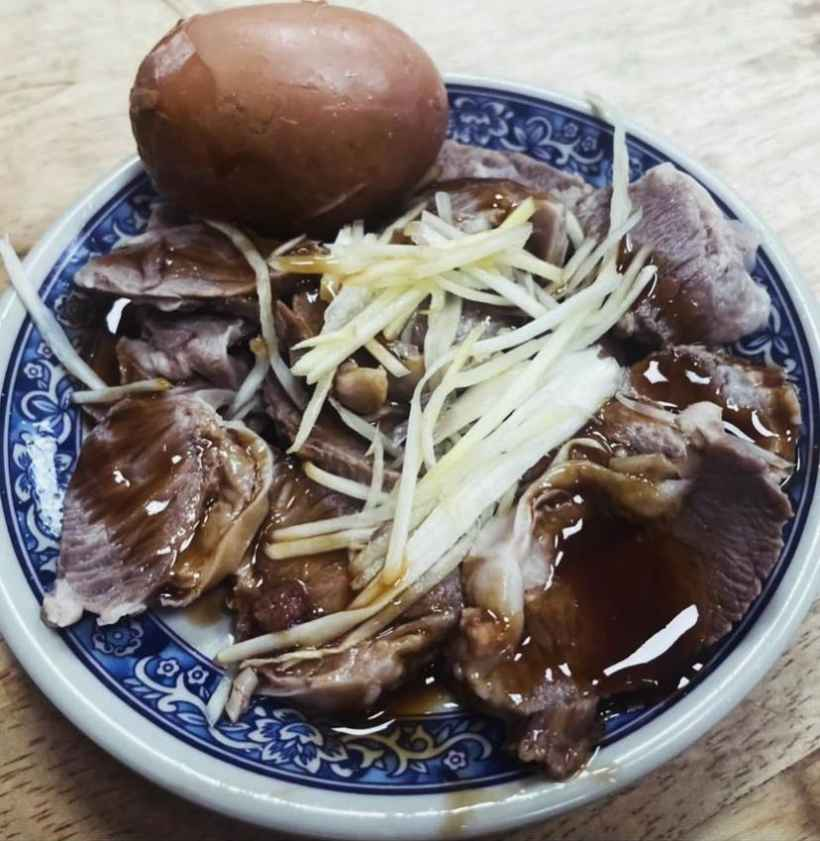
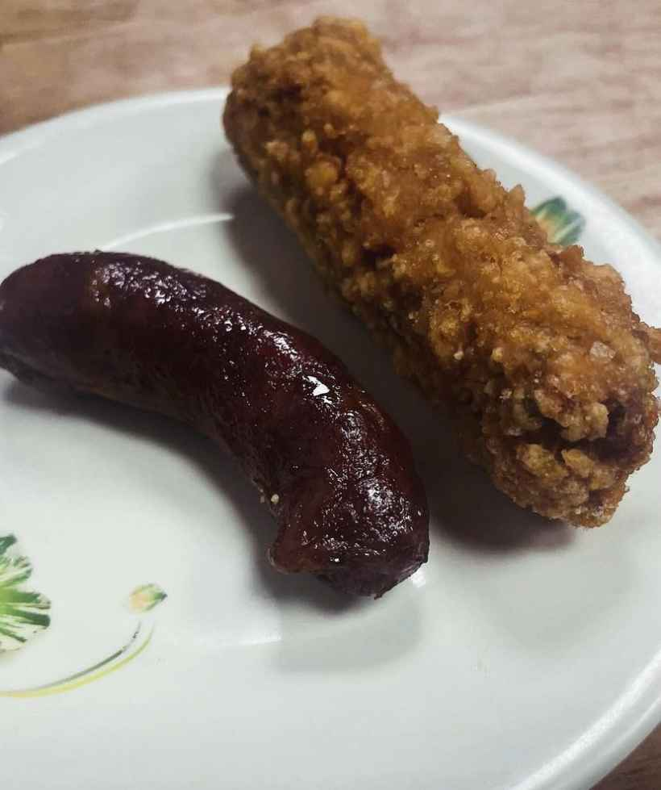

嗨囉🤪
我們是Hungryforest🌳
今天要來跟大家分享的是
彰化的排隊蛤仔麵🍜

《阿添蛤仔麵》
🌟彰化老店小吃🌟
📍彰化縣彰化市民族路455號
在彰化深耕了三十多年的老店，最近阿添也在台中開了新的分店🥳阿添蛤仔麵每到用餐時間，總是不乏排隊的人潮😅價格親民，除了麵之外，還有很多好吃的小菜可以選擇！
蛤仔麵條（乾+小，85元）：其實一開始看到有點小小失望，因為網路上看到的照片，蛤仔總是多的驚人，有點落差，但其實也沒有給的很少啦🙈重點是它的麵煮的很有味道，超喜歡那個醬！吃得超開心😃麵有附丸子，也是好吃的呦！
蛤仔麵條（湯+大，100元）：小編本身平常是喜歡乾麵勝於湯麵的，但不得不說，阿添的湯真的好好喝，有鮮有甜有鹹，蠻讚的！大碗也確實比小碗大蠻多的🤣🤣🤣

燙肝連（小，50元）：不多說！必點！！！超級好吃😋那個肉真的超級無敵嫩，好愛好愛😚

滷蛋（15元）：滷得很認真的滷蛋，吃起來有點像鐵蛋🤣但不會不好吃
香腸（20元）：烤得很認真的香腸，吃起來口感比較硬一點，很古早味！

雞捲（25元）：吃起來有點像蝦捲，蠻好吃的，外皮很酥，內餡飽滿☺️
整體來說，除了一開始覺得蛤仔量跟網路上看的有點落差的時候，微失望（再強調一次，量沒有很少！），其他都超級滿意，會再訪😎😎😎
兩人共筆王翰霖 醫師、張瑜珊 醫師
認識小編